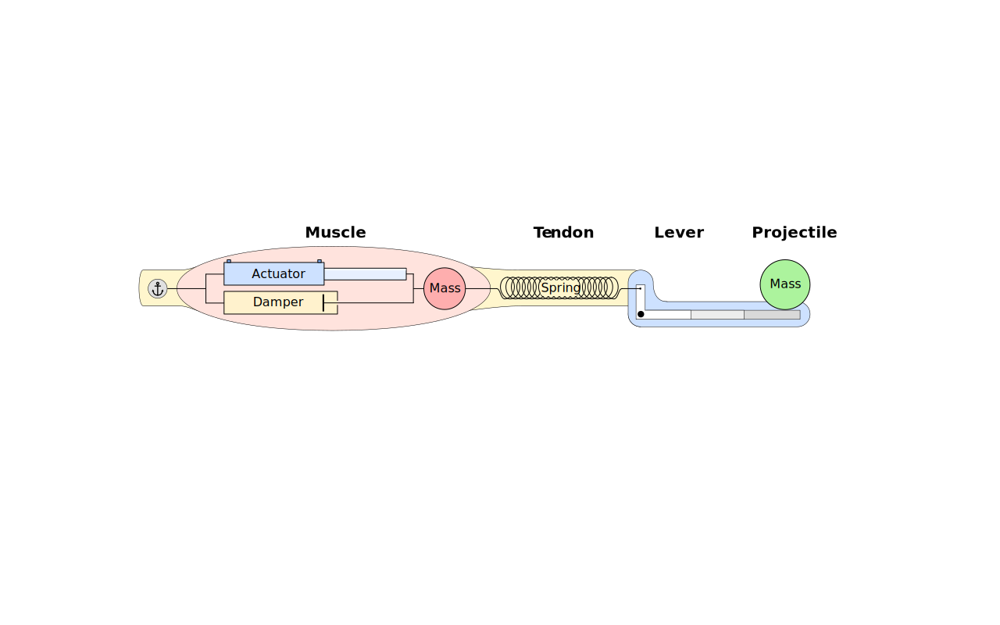

Overview
Muscle Explorer simulates the performance of musculoskeletal systems in which a single muscle shortens against an elastic element in series with a mass. The model can be used to explore muscle-tendon behavior to predict results of in-vitro muscle experiments or the performance of an animal's explosive movement such as jumping or striking. The model simulates the interaction of several elements: a muscle-like actuator, a viscous damper, an inertial muscle mass, a hookean spring, a massless lever with a variable mechanical advantage, and an inertial projectile mass (see figure).
To simulate a movement, the physiological and biomechanical parameters of the model are set and the muscle actuator is activated. The actuator builds force that can move the inertial muscle mass and stretch the spring. Recoil of the spring rotates the lever and accelerates the projectile mass. The muscle actuator generates force using realistic force-velocity and force-length properties for vertebrate skeletal muscle, and the physics are modeled in one dimension in a forward dynamics fashion using a classical fourth-order Runge-Kutta integrator.
Components
Muscle
All energy in the simulation comes from the muscle component, which consists of three subcomponents: muscle actuator, muscle mass and muscle damper. The muscle actuator is the most complex, producing force based on three conditions of the muscle: shortening velocity, length, and excitation level. Muscle shortening velocity determines absolute muscle force using a non-normalized force-velocity relation with specified Vmax, P0, and curvature (i.e. power ratio). The resulting force is multiplied by a value from 0 to 1 that is determined by the muscle length using a normalized force-length curve for frog limb muscle. This product is further multiplied by a value from 0 to 1 representing the level of muscle excitation, which increases sigmoidally from 0 at the start of the simulation to 1 over a specified duration. The acceleration of the inertial muscle mass is determined by the balance of forces acting on it, with the actuator applying force in one direction and the spring applying force in the opposite direction. The muscle damper opposes movement of the muscle mass with a force that is proportional to the velocity of muscle length change (i.e. velocity of muscle mass movement). The muscle is constrained to exert force only in tension (i.e., it can't push).
Tendon
The tendon component consists of a tension spring that links the muscle to the appendage and projectile. Movement of the muscle mass is coupled to length changes in the spring, which lies between the muscle mass and the lever that is attached to the projectile. The spring is hookean and exerts force that is proportional to its length, and the spring constant can be specified. Like the muscle, the tendon is constrained to exert force only in tension.
Appendage
The appendage component consists of a lever that links the tendon to the projectile. The lever is massless and has a variable mechanical advantage as it rotates. The range of mechanical advantage can be specified (as gear ratio) as can the duration over which it changes. A latch prevents the lever from rotating as the spring exerts force on the lever; it can be released at a specified time, after which the change in mechanical advantage occurs.
Projectile
The projectile component consists of an inertial mass that is accelerated by the lever. No other forces are acting on the projectile, such as gravitational or damping forces, although these could be added to the code.
Simulation Parameters
Duration: Duration of simulation in seconds.
Steps: Number of time steps in integration. Increase if traces are jittery.
Muscle L0: Muscle length in meters at which isometric force peaks. Not the same as resting or initial length, below.
Muscle mass: Muscle mass in kg. Can be set independently of length and P0, therefore can be unrealistic. Used to determine the inertial muscle mass, below.
Muscle P0: Maximum isometric muscle force in newtons.
Muscle Vmax: Maximum velocity of unloaded muscle shortening in meters per second.
Muscle F-V curvature: Curvature of force-velocity relation. Higher is more curved. Value of 3 is about right for frog limb muscle with a power ratio of 1.1.
Muscle init. length: Muscle length at start of trial, as fraction of muscle L0.
Excitation: Duration of muscle excitation in seconds.
Inertial mass: Muscle mass that is accelerated when the muscle shortens, as a fraction of muscle mass. Higher values reduce vibrations that can occur with a small muscle mass, a stiff spring and little damping.
Damping constant: Viscous damping of the inertial muscle mass, in newton-seconds per meter. Higher values reduce vibrations. A value of zero is no damping.
Spring constant: Stiffness of the spring between the muscle and projectile, in newtons per meter.
Spring slack length: Length in meters at which the spring exerts no force.
Latch Time: Start changing leverage at this time unless other conditions are met first, such as a muscle force or muscle length threshold.
Length threshold: Start leverage change when this muscle length is reached, as fraction of muscle L0, unless force or timing threshold is reached first.
Force threshold: Start leverage change at this muscle force, as fraction of muscle P0, unless length or timing threshold is reached first.
Latch duration: Duration of the change in leverage in seconds.
Initial gear ratio: Starting gear ratio of leverage change (the reciprocal of mechanical advantage).
Final gear ratio: Ending gear ratio. A value of 1 would be no mechanical advantage.
Projectile mass: Mass of the projectile in kg.
Simulation Output
Muscle length vs time: Length of the muscle component in meters versus time in seconds. Length is calculated as the muscle's initial length minus the distance moved by the muscle mass.
Muscle force vs time: Force in newtons is constrained to be positive, i.e., produces shortening.
Muscle velocity vs time: Velocity in meters per second, with positive values indicating muscle shortening.
Absolute muscle power vs time: Power in milliwatts is calculated as muscle velocity times muscle force times 1000. Not mass-specific power (unless the muscle mass is 1 kg).
Absolute muscle work vs time: Work in millijoules is calculated as cumulative muscle force times amount of shortening times 1000. Not mass specific.
Projectile position vs time: Position in meters of the projectile mass.
Projectile velocity vs time: Velocity in meters per second of the projectile mass.
Projectile acceleration vs time: Acceleration in meters per second per second of the projectile mass.
Mass-specific projectile power vs time: Power in watts per kilogram of projectile mass, calculated as projectile velocity times acceleration.
Spring length vs time: Spring length in meters, calculated as projectile position minus muscle length. This works because the projectile is moving in the same dimension as the muscle, the pseudoanatomical figure above notwithstanding. Spring length is constrained to be equal to or longer than the initial length.
Spring velocity vs time: Velocity in meters per second that the spring is shortening. Positive values indicate shortening.
Muscle excitation vs time: Proportion of maximum muscle excitation over time that is prescribed. This value is multiplied by the muscle force derived from the length-force and force-velocity curves to ramp up muscle force over time.
Muscle relative force vs length: Muscle force as a proportion of P0. Both potential (pink) and realized (purple) force-length trajectories are shown for the realized range of lengths.
Muscle force vs velocity: Force in newtons vs velocity in meters per second. Both potential (pink) and realized (purple) force-velocity trajectories are shown for the realized range of velocities
Gear ratio vs time: The profile prescribed for the changing gear ratio between the spring and projectile. The reciprocal of leverage or mechanical advantage.
Saving Output
Pressing the "Download data" button will download the displayed data as a csv file to your computer. Currently the settings are not saved, just the data in the graphs. Each output file has a unique name ending in numbers that increase each time you save data.
Scenarios
The model can simulate a number of scenarios, such as a salamander shooting out its tongue, a frog launching its whole body into the air, or a reduced system of just a muscle and mass.
Salamander tongue projection: Large muscle, small projectile mass, late latch, and rapid change of mechanical advantage.
Jumping frog: Small muscle, large projectile mass, early latch, and slow change of mechanical advantage.
Muscle moving a mass: Same initial and final gear ratio or very early latch coupled with a high spring constant (i.e., no elasticity).
Challenges
The model can be extended with some knowledge of JavaScript. In addition to this documentation, the code is thoroughly commented with the goal that the function of every line is clear, as well as the overall structure of the program. I am far from a professional programmer and I am sure I have committed a number of coding crimes, e.g. putting everything in one file, but hopefully the code is at least logical and understandable. Some ideas for extension are (1) saving and loading settings and results (would be awesome for teaching); (2) wrapping the code in a set of loops to systematically change parameters and save the results; (3) adding more or different output graphs or files, or the production of nice figures; (4) allowing parameters to be specified in different ways, e.g., elastic modulus instead of spring constant; and (5) adding drag or gravity to the projectile mass. The model and this documentation are on GitHub.
Dependencies
The model is implemented in JavaScript, CSS and HTML and should run in most modern browsers. I know that it runs well on Chrome and on Safari mobile. On Safari desktop, however, it gets sluggish after applying settings several times and has to be reloaded to recover good performance. The only dependency is Google Charts.